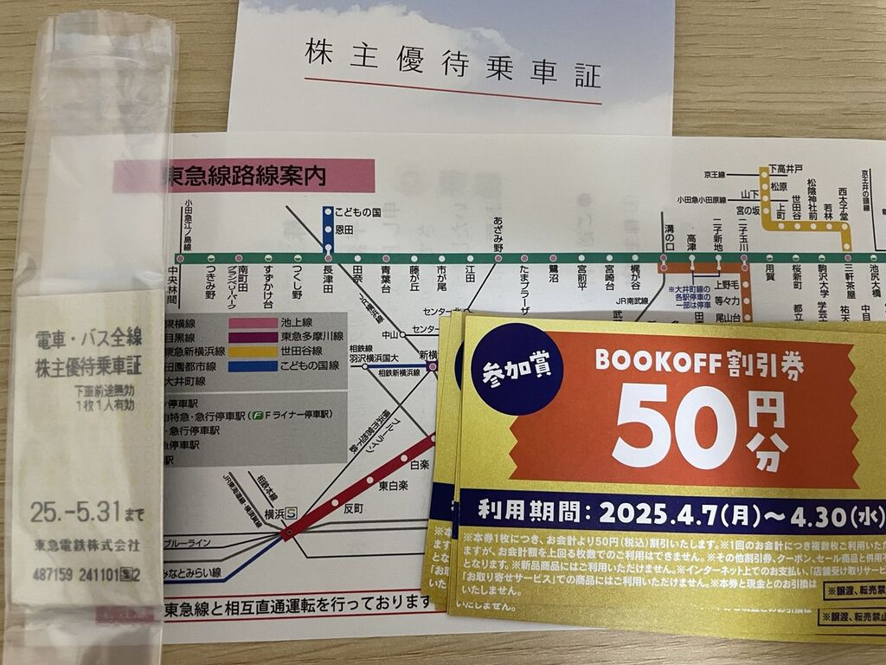

Yokohama: 山上公园和山下公园
很多年后，当我第一次去横滨旅行时，我会回想起在大学在宿舍里 看「约会～恋爱究竟是什么呢～」主人公们在山下公园约会 的那个晚上。
山下容易山上难
如今我已经不知道我去过多少次横滨了，因为交通的一体化，事实上从东京到横滨从通勤时间上来说，完全没有跨越城市的感觉。 但横滨这个地方是分裂的，如果我们只把目光移向横滨站，那么站前的样子和日本其他的地方似乎没有多少区别。 甚至光是看横滨站附近的海底捞，可以说和池袋的气质也相差无几。 可是如果沿着港未来线多走几站来到元町中华街一带，整个的异国风情和海洋光景扑面而来，那里读作ヨコハマ、写作Yokohama.
元町中华街站出来就是海边的山下公园，那里几乎是整个日本我最喜欢的地方，周围的建筑规整优雅，修剪克制的法式花园对面就是湛蓝的海洋。 但我之前从来没有思考过一个问题，为什么是『山下公园』？Où est la 山? 山在哪里？
事实上如果我们观察Google Map，会发现山下公园的东南方向有两块隆起的绿地，上面有一些密密麻麻的标注，『American Yama Park』，『横滨外国人墓地』， 『横滨山手西洋馆』，『English Rose Garden』，『France Yama』这些地名听起来就让人浮想联翩。
于是这里便成为了我今天的旅行计划。
回头看我发现事实上有更好的路线上山，但是我是摸索着大致的方向往那边走，走到了现在来看是叫做『横滨市主要地方道82号』的一条宽阔的路上。
这条路给我的感觉非常不好，明明美丽的山下公园就在不远处，但是过了高架桥后，这条82号公路周围的景致看起来像是国内坐长途汽车开到城市郊区的样子。 总的来说给我一种怪怪的萧条感，我觉得问题可能就出在这条宽阔的马路上，宽阔的马路是城市生机的主要杀手。 马路过宽会让车流密布，而马路两边商铺的距离变得更远，一边的商铺难以吸引到行走在另一边的人，久而久之就变得难以维系。
我一边想着这类城市规划的事情一边想着怎么上山，事实上被我找到了一条上山的小道。
什么是洋味
说是山，事实上只是一个小丘，我刚做好登山的准备，却发现我已经走到了平坦的路面了，上下高差我怀疑不到80米。 第一眼看到的是神奈川近代文学馆，前段时间这里有安部公房的展，我还在电车上看到了广告，但现在是另一个人，我不认识，因此也没有进去看：

在这附近有一个开阔的展望台，尽管这座小山不是很高，但附近也没有什么高建筑，因此远处的Yokohama Bay Bridge尽收眼底。 可惜天气虽然晴朗，但是由于热流涌动，因此能见度其实算不上太高。 后来我知道，这里就是所谓的『港の見える丘公園』。地图上另一个绿色的地方叫做『元町公园』，和这一块其实距离不远，都在这座山上，没有什么高低落差，因此非常适合走完一个走到另一个。事实上我也不确定我有没有走进元町公园，但我肯定是走到了那一边的……
山上的其他景致可以用洋味扑鼻来形容，我不确定洋味是什么味道，但就像我们对未来的想象源自于我们过去对未来的想象，我们对异国风情的想象往往也来自于我们身处本地对于异国风情的想象。
这是什么意思呢，这个意思是说如果你问我这是不是真的洋味，我觉得大概不是； 这就像楼下的横滨中华街是不是中华味，作为一个土生土长的老中人我可以确定那肯定不是中华味，而且据我所知也不存在于历史上任何一个时代，这就是日本人想象的Flyday Chinatown. 以此类推，我觉得山上的西洋建筑，西洋花园，或许也不是真实的西洋风情，甚至不是历史上存在过的西洋风情，但是确实贴合我对于西洋的想象。 但对于一个真正的来自西方世界的人，估计会觉得这里非常奇怪，有点像他的家乡风情，但又完全不像。


有意思的是，我还误入了一个国际学校的校园祭，美国大叔的BQQ闻起来真的很香:

山下公园定番
山下公园因为来过太多遍，反而没有多作停留。一到春天，到处都热闹非凡，明明即便是冬天的晴天，人都少得可怜。


横滨站
如前所述，横滨站和日本其他大大小小的车站没有本质区别。 港未来那边那种19世纪的西洋风情荡然无存，刚刚看到的那些洋楼，折衷主义建筑完全隔绝在另一个世界，这里是完全普通的车站商圈。
当你在商圈时，你最正确的做法就是逛商场。 有趣的是我今天碰到了两波偶像团体，一个在商场楼下广场上表演，一个在商场楼上tower records里面表演，宅男们热情的呼喊让我惊觉陷入沉思：这些偶像团体虽然名字我已经完全没有听说，但是唱的歌怎么跟是年前相比毫无变化？

最后：为什么今天要去横滨呢
因为横滨是东急铁路最远的地方，为了车票效益最大化：

If you have any feedback to this article, feel free to comment here or send an email to me